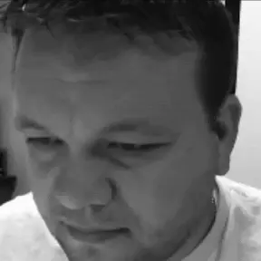

Steve Larsen | WDD 130
My name is Steve Larsen, and I live in the high desert region of southern California. I enjoy solitude.
Sometimes, I like to imagine what it would be like to walk among the stars -- to see the heavens from the perspective of our Heavenly Father and to know every particle in the universe. It's one thing I look forward to in the eternities, at least, one thing among many!